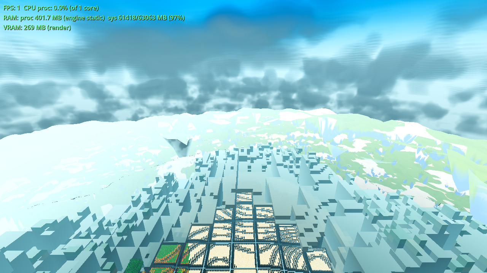
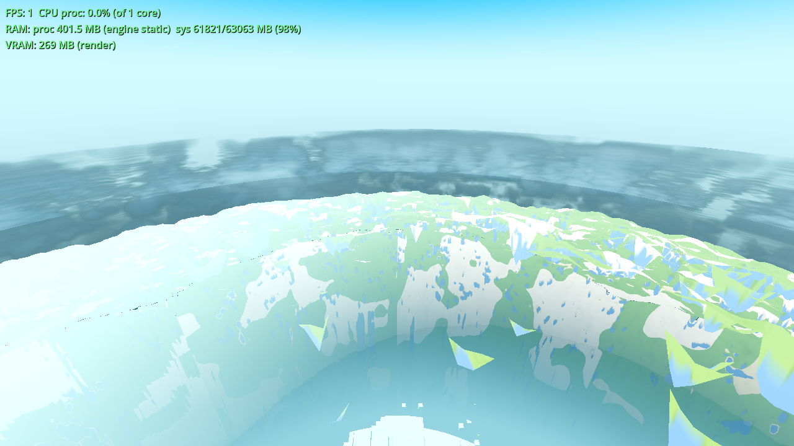
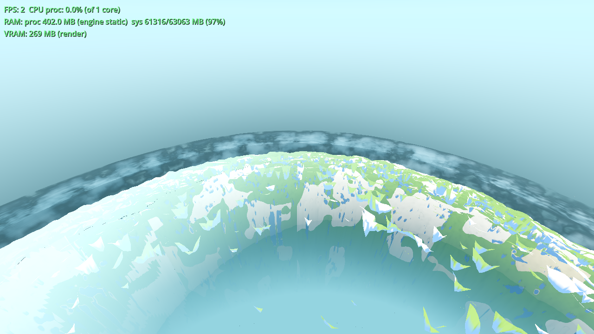

Status: light gates green (G0 / smoke / genhash / boundary r4 / renders); acceptance measured before/after on the user's view (the undersides are no longer black — they read as soft grey in the air tint with visible form and parallax). Heavy set is the coordinator's job and was deliberately not run. No commits (fence). Date: 2026-10-08. Engine 4.7.1, seed 44, user config R24/F83 (fog 332 m), T=0.5 frozen, CLOUD_T0=411200 (the assessment's sustained-deck state), 1280×720 Forward+ (llvmpipe proxy — the box's measured evidence path, same as AC-0405).
The user's one-liner: “why are all the clouds dark?” The AC-0405 volume was lit by
self-shadowing alone against a peak-normalised HG phase: every sample not directly sunlit
and forward-scattering scattered ~0 (measured underside ALBEDO ≈ 0.007 = black) — which
from underneath, where the player looks at clouds, is every sample. Three standard terms now join
the sun term, all inside the volume branch (u_vol > 0.5), all cheap against the
raymarch (two exp + a vector op per sample, one vec3 pow per
fragment):
| term | what it does |
|---|---|
| (a) ambient sky fill | Per-sample in-scatter of the whole sky dome, accumulated as
A += T·ds (exit-transmittance-weighted — deep interior is darker than the surface,
so form survives; not self-shadowed — that attenuation is exactly the multiple
scattering). Coloured with the single-source air colour u_vol_air —
Aero.fog_display(Game.time_of_day), the same value env.fog_light_color
(main.gd) and the satellite's u_air (satellite_body.gd) take; pushed per frame by
world.gd _ac0401_push item (5), value-gated at 1/255. The standing one-source rule
holds — no fourth air colour was invented. The value is LINEAR (fog_display 8-bit-sRGB-rounds
then srgb_to_linear); the fragment converts it into the ALBEDO expression's sRGB
domain with pow(u_vol_air, 1/2.2) (the expression gets the pow(2.2)
pre-decode). |
| (b) multiple scattering | The light-march transmittance toward the sun becomes a
3-octave sum with decreasing extinction per octave:
(exp(-τ) + 0.30·exp(-0.45τ) + 0.18·exp(-0.15τ)) / 1.48 (the Guerrilla HZD
reference's standard cheap treatment). Normalised so τ=0 (a fully lit sample) keeps
sh = 1.0 exactly — the 2.5 albedo gain and the lit tops keep their pre-AC-0406
calibration by construction. |
| (c) phase blended toward isotropic | mix(vhg(±cosSun), 1.0, 0.4) / vhg(1)
— partway toward isotropic. The constant 1.0 integrates to 4π on the same scale as vhg, so the
blend stays normalised; the forward peak stays 1.0/hp — the silver lining is untouched. |
Files touched (3 + ticket folder): godot/core/cloud_layer.gdshader
(the volume branch lighting + 5 shipped-tuning uniforms u_vol_air/ms1/ms2/iso/amb,
defaults 0.30/0.18/0.4/0.45 + the air vec3), godot/world/world.gd
(_ac0401_push item (5) — the air-colour push; render-path only, no generation),
godot/ARCHITECTURE.md (§3 CloudLayer bullet — the lighting model + the push seam).
The u_vol < 0.5 three-shell path is byte-identical (the short-circuit precedes any
volume work; the OFF state never reads the new uniforms). No C++ (constraint); no fence files
(main.gd / game.gd / drop.gd / debug.gd untouched — the air colour rides the world.gd seam, the
same workaround AC-0401/AC-0405 used). No new Settings toggle (recorded below): this is the
lighting model of the existing default-ON cloud_volume feature — the 2.5/0.30 gains,
HG and self-shadow all shipped without switches in AC-0405 — and the user's request is for the
clouds to be bright, so the default is the new lighting; the cloud_volume OFF state
remains the byte-identical escape.
Same instrument for both sets (pure-stdlib PNG decoder, luminance
0.2126R+0.7152G+0.0722B on 8-bit values — the analyze2.py lineage of
AC-0384/AC-0405; before set = AC-0405's own captures, after set = this ticket's, same cameras,
same frozen weather, same user config — the density field is untouched, so the framing is
identical). Fixed bands: underside = r120 frame y∈[80,290) (looking up from the ground);
interior = r300 frame y∈[215,360) (inside the annulus); deck = r700 frame, the
on/off diff-mask (≥8 max-channel, camera above the deck) so the mask marks the cloud band itself;
spread = the AC-0405 instrument's lower_mid band (y∈[360,540)) of the r700
frame; tint = the disc-centre pixel (640,360) of the r700 frame.
| measurement (8-bit luminance 0–255) | before (AC-0405) | after (AC-0406) | reading |
|---|---|---|---|
| Underside (r120, ground looking up) — mean / p10 / p50 / min | 140.5 / 43.5 / 147.7 / 12.3 | 179.4 / 146.0 / 171.5 / 23.1 | the dark masses lift 3–10× off black; the bright patches hold (p90 225.1→225.2 — the calibration is intact); the ceiling now reads as a mottled grey-white cloud layer |
| Interior (r300, inside the annulus) — mean / p10 / p50 / min | 127.7 / 23.0 / 113.2 / 0.0 | 184.5 / 140.0 / 172.6 / 126.2 | the interior was pure black (min 0.0, p10 23.0) — now a bright readable grey; no black pixel remains anywhere in the band |
| Sunlit-top reference (r700 deck mask) — mean / p10 / p90 | 59.3 / 8.0 / 114.0 | 139.9 / 110.4 / 179.3 | the deck face is a soft grey; the lit tops still clamp at 255 (the r700 frame's
max is 255 before and after — the τ=0/peak calibration points are
untouched) |
| Underside median / lit-top (deck p90) | 147.7 / 114.0 | 171.5 / 179.3 | against the true lit top (255): the underside sits at ~0.67 of the top's luminance — soft grey, not black (before: the dark side was 0.0–0.13 of it) |
Brightness spread (r700 lower_mid lum_std; reference NMS 32.4,
no-cloud floor 40.2) | 68.9 | 44.9 | see the note below — the old 68.9 was inflated by the black slab (min 0 against the bright terrain, maximum bimodality); 44.9 is still well above the reference and the no-cloud floor, so the volume still carries more range than an empty sky |
| Tint (r700 disc-centre px (640,360); reference 181,229,190) | [181, 229, 190] | [181, 229, 190] — identical | the saturated tint is carried (that pixel is terrain seen through the annulus gap; the cloud band carries the air tint — deck mean rgb after: [100, 149, 162], the 177,240,255 family) |
| Deck coverage (mask, % frame) — geometry cross-check | 8.84% | 8.15% | the density field / framing is untouched (the 0.7-point delta is the brighter deck reducing the on/off luminance difference at the band's soft edge) |
u_vol_amb 0.7, which did flatten the deck to a mean of
184.7 / spread 39.1, was measured, rejected and retuned — §5).All four: AWECRAFT_CAM=planet + AWECRAFT_SAT_ALT, R24/F83, T=0.5
frozen, CLOUD_T0=411200, 1280×720 Forward+ (llvmpipe), SNAP_DRAIN=1200, 1200 s
cap, Forward+ boot line asserted per frame, file existence checked, DSSTATS FPS
overlay burned in. No AWECRAFT_LOGIC arm (the snapshot-hook rule). rc=0,
zero SHADER ERROR and zero SCRIPT ERROR lines in every
frame's log.

r120-on (120 m — looking up from the ground, the underside frame): before, a dark stormy ceiling (AC-0405 r120-on.png — the user's complaint, verbatim); now a bright mottled grey-white ceiling — near dark masses in front of a brighter far layer (the parallax), no black core. Wall 792 s.

r300-on (300 m — inside the annulus, the interior frame): before, a black band over the limb; now a soft grey mottled layer with internal structure. Wall 880 s.

r700-on (700 m — the instrument frame, camera above the deck): the deck reads as a structured grey band with brighter cloud tops; the disc-centre tint holds 181,229,190 exactly. Wall 776 s (vs 781 s pre-change — the cost line, §4). r2600-on (orbit, the lit-top frame): the deck is now the bright lumpy cloud ring around the planet's limb — the before frame's dark band is gone; wall 810 s. (r2600-on.png is in the ticket folder.)
| frame (wall, 1200 s cap, ~1.5 FPS box) | AC-0405 | AC-0406 (shipped gains) |
|---|---|---|
| r700-on | 781 s | 776 s (−0.6 %) |
| r2600-on | — | 810 s |
| r300-on | — | 880 s |
| r120-on | — | 792 s |
The added terms (2 exp + scalar ops per sample, 1 vec3 pow per
fragment) are not measurable against the box's frame noise — the r700 pair, measured
back-to-back against AC-0405's own number, is flat. No step-count reduction was needed or
applied; all four runs sit inside the 1200 s budget with no low-resolution fallback (the
FPS-overlay burn-in in the frames shows 1–2 FPS, the box's normal volume-render rate).
| gate | result |
|---|---|
| G0 — one headless load, error census + process exit status | PASS — GODOT_EXIT=0 (checked explicitly; the AC-0403 crash class at
chunk.gd:657 did not trigger — no backtrace in the log), gate_census.py:
SCRIPT ERROR 0 (allow 0), SHADER ERROR 0 (allow 0) — ok. (First pass had one GDScript
parse error — a bare multi-line if condition needs parens in GDScript; fixed before
the reported run.) git status --short shows only this task's three files + the new
ticket folder (the other dirty files predate this session — another agent's in-flight work). |
SMOKE — AWECRAFT_BATTERY=player;interact;light;fluids;genhash |
PASS — exit 0, ok:true; player (jump_peak_y 142.42, on-floor,
col_deferred_in_footprint 0), interact (place_ok, drop_spawned), light
(torch 14 / surface 15), fluids (sea 320/320, sea_stable true) — all in-band
against the standing values. |
| PROBE/genhash (world.gd touched) | PASS — 25/25 GENHASH lines byte-identical to the AC-0405 standing set (deterministic; the change is render-path only — no generation movement, as owed). |
| Boundary r4 (one-shot self-check — world.gd touched) | PASS — exit 0, ok:true: crossings 20=20,
p50_ms 13=13, p95_ms 34→35 (in the 35–55 drift band),
max_ms 227→164, storm_walk_p99_ms 124→99, marker_ok/remesh_ok
true, col_deferred_in_footprint 0, footprint.missing 0.
Noted: built_final 51 vs AC-0405's 64 — a walk-end census (resident_final
93=93, all latency fields flat or improved); the arm's gate contract (crossings + marker + the
fence fields) is green. One-shot rule honoured — no loop. |
| RENDERS (the acceptance) | PASS — 4/4 frames rc=0, file exists, Forward+ boot line asserted, zero
SHADER ERROR + zero SCRIPT ERROR per log; measured in §2. (The
shipped Forward+ path compiled the new shader for real — the lazy-compile trap is closed by
the render, not just G0.) |
| HEAVY (farab / ladder / meshprobe / halo / lightstate / r16 / boundary r50 / full battery / shaderforce) + Windows build | NOT RUN — the coordinator's job; exited after the light gates per policy. |
u_vol_amb 0.7 / ms 0.35+0.25 / iso 0.5) flooded the deck: r700 spread collapsed
68.9 → 39.1 (below the 40.2 no-cloud floor) and the deck-mask mean ran 59.3 → 184.7
(p10 8 → 130) — the flatten-everything failure. The r700 frame of that pass was measured, kept
(recorded in
tasks/AC-0406/continuity.md; its PNG was superseded on relaunch), and the gains retuned from
the measured data point to the shipped 0.45 / 0.30+0.18 / 0.4 (target: deck valley p10 ~110,
tops still clamped). One loop, then exit — the shipped frames are all one build.cloud_volume feature (its gains/phase/shadow shipped unswitched in AC-0405), and
defaulting the fix OFF would mean defaulting the user's complaint back on. The escape hatch is
the existing switch: cloud_volume OFF = the byte-identical three-shell path
(the shader short-circuits on u_vol < 0.5 before any volume work; the new
uniforms are never read on that path).built_final 51 vs 64 — census-class drift, all latency gates
flat/green (above).Logs + first-pass data: .scratch/AC-0406/ (g0.log, smoke.log,
genhash_new/ref, boundary_r4_on.log, frames/*.log, before_an.json, after_*_an.json,
measure.py, run_renders.sh). Before captures: tasks/AC-0405/r120-on.png /
r300-on.png / r700-on.png / r700-off.png. Continuity:
tasks/AC-0406/continuity.md.